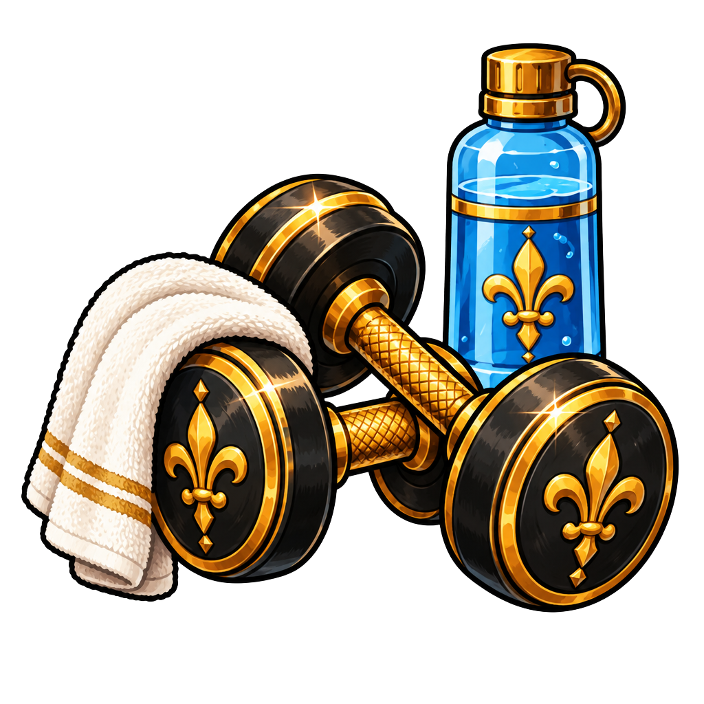

WaterKraft / Corpo & equilíbrio
Planejador de treino
e monitoramento de IMC
Força para evoluir. Constância para manter.


Biblioteca de treinos
Planos disponíveis
Nenhum plano para estes filtros.
| Feito | Exercício | Séries | Repetições / tempo | Descanso / ritmo |
|---|
Planos gerais e ilustrativos, não prescrições individuais. Alterne A/B entre os dias e mantenha descanso entre sessões de corpo inteiro. Ajuste carga, técnica e duração com um profissional; pare em caso de dor, tontura ou mal-estar. Não há garantia de perda de peso.